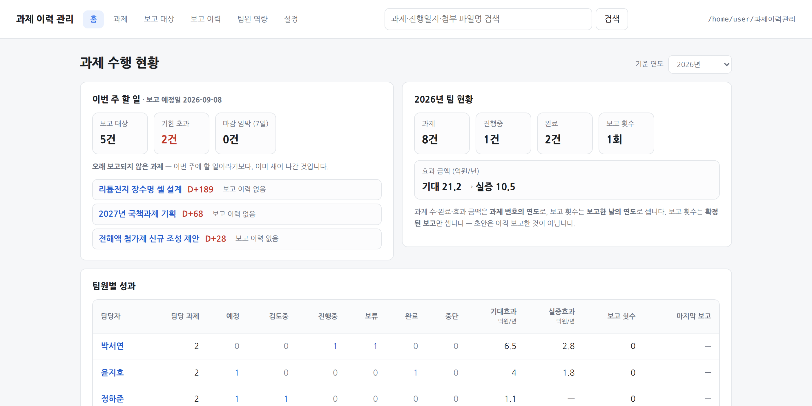
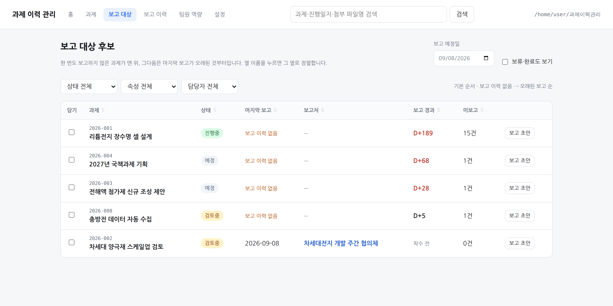

2026 AX 성과공유회
Vibe
팀장
AI와 함께
2주 만에
구축한 업무관리 자동화 툴
과제 하나가 폴더 하나
진행 이력 · 첨부 · 보고가 한자리에 쌓여 몇 달 뒤에도 맥락이 남습니다
이번 주 보고 대상을 도구가 골라 줍니다
미보고 경과일과 쌓인 분량으로 순서를 매겨, 기억이 아니라 기록으로 판단합니다
보고 초안 자동 생성 · 확정본은 스냅샷
지난 보고 이후 내용만 모아 초안을 만들고, 확정하면 그때 문서가 그대로 남습니다
팀 현황과 팀원 역량을 한 화면에서
연도별 · 팀원별 수행 현황과 교육 이력이 모여 면담과 성과 정리가 한자리에서 끝납니다


선강DX개발팀
· 발표자 권경락
데이터는 표준 마크다운 파일 · 사내망 안에서만